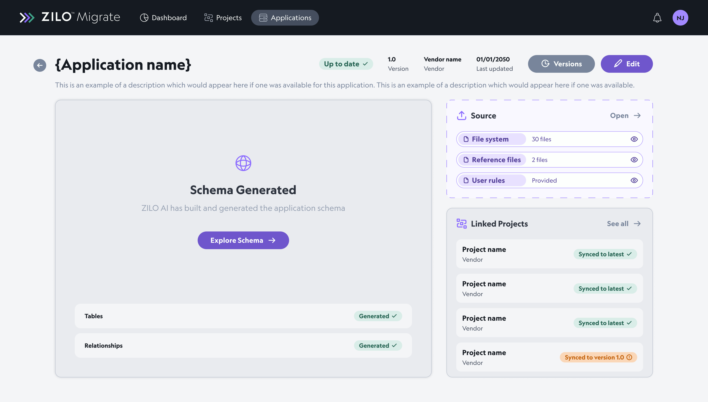
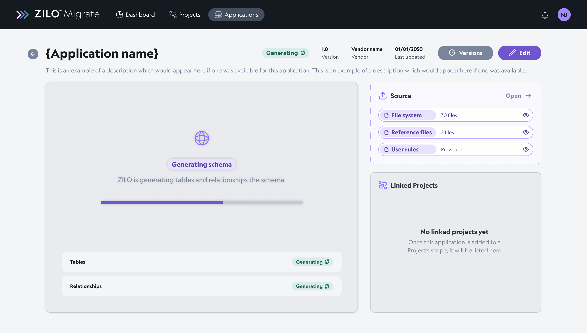
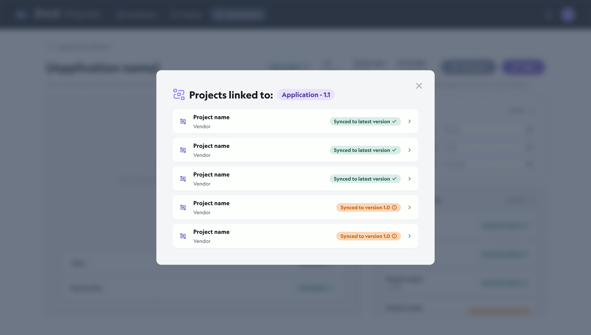
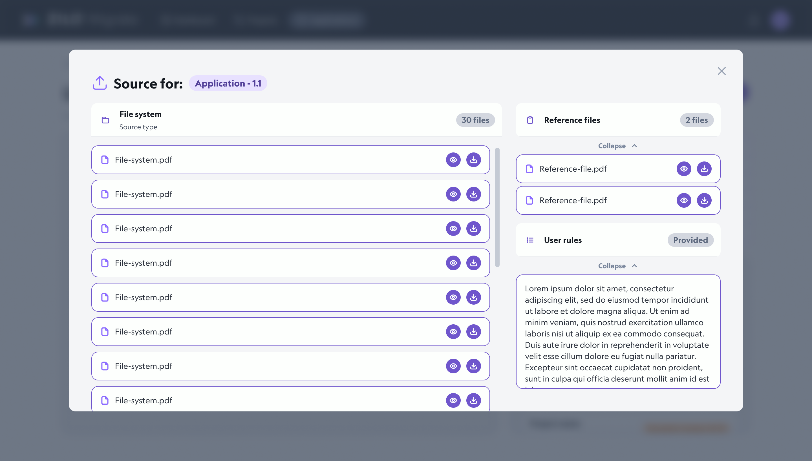
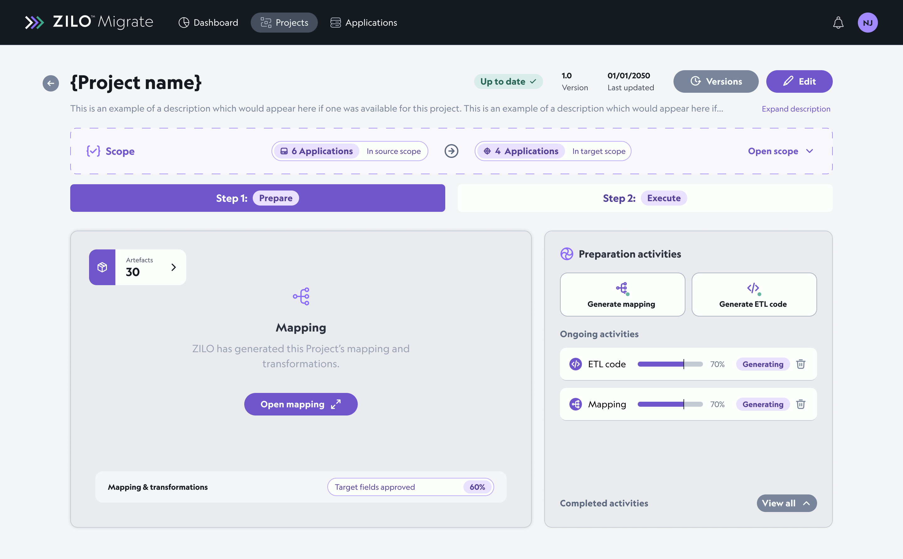
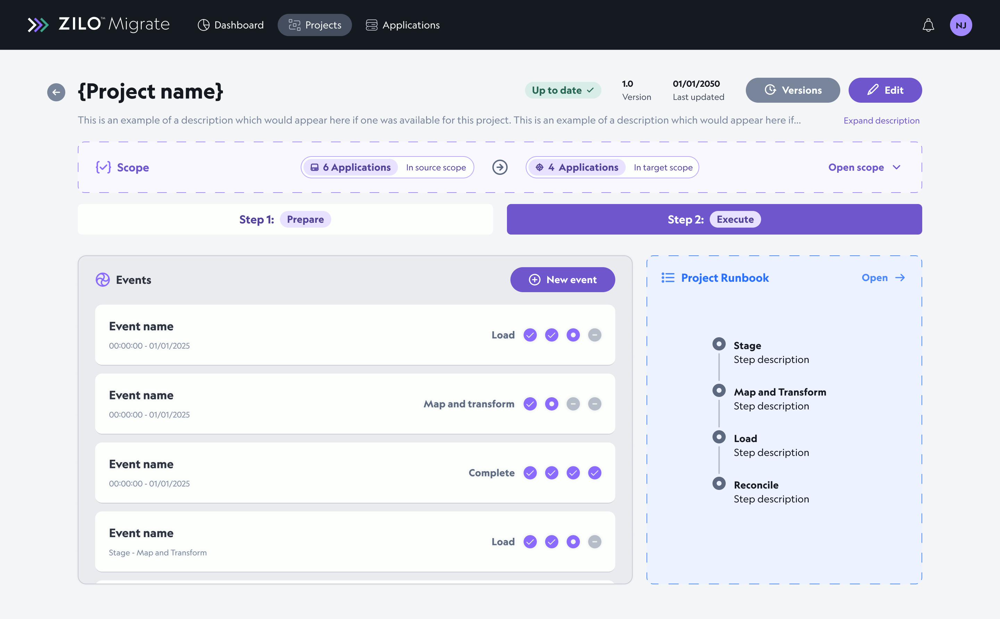
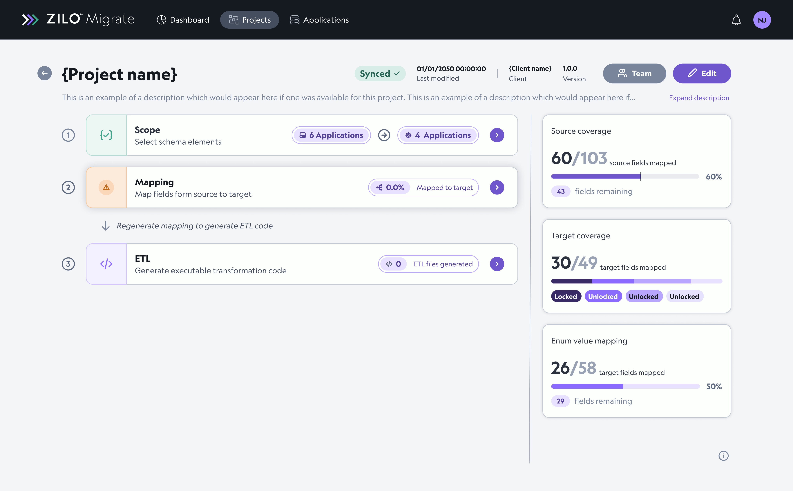

Sole Designer
On complete product
ZILO Migrate is an AI data migration tool that lets specialists auto-match sources and targets, then review and edit that mapping visually. I was the only UX designer on the product, which grew out of a Migration Oversight tool I had designed earlier.
Sole Designer
On complete product
0 to 1
Built from fundamentals
Made for AI
Designed for humans
01 — The challenge
Data migration is complex, time-consuming, and essential for businesses to get right. ZILO Migrate allowed migration specialists to use AI to auto-match sources and targets, then edit that data in a visual way.
My aim was not only to leverage AI to make the task simpler and faster, but to let users keep a high level of control and oversight over the process.
02 — Briefing & research
After the Migration Oversight toolset shipped, the team decided to build a more fully featured product. I ran extensive user interviews and stakeholder workshops with product managers, AI researchers, and migration specialists.
That work gave me a thorough understanding of the data migration process, and of where AI could genuinely help versus where it would hit limits. I collaborated with the broader team to develop a persona and an overarching workflow the tool would support.
I also researched comparable tools, knowing there was no direct competitor doing exactly what we were building.
We identified two main personas working on migration projects in the tool: those who view progress (project managers) and those who do the migration work (migration specialists).
Project managers need visibility into status, scope, and risk without living inside technical mapping screens.
Migration specialists need speed, precision, and tools to inspect, adjust, and run migration artefacts end to end.
Data migrations are inherently complex, so I mapped the high-level processes the tool would run and where they would sit in the system workflow.
Two main sections emerged: the application library, where source and target systems are organised, and projects, where applications are pulled together and the migration from A to B is planned and executed.
The AI team was building so quickly they were creating makeshift interfaces on their own. I absorbed those interfaces and reverse-engineered them so the experience would make sense to users, not just to engineers iterating in isolation.
03 — Design
The interface split cleanly between organising applications, inspecting schema, and running migrations inside projects, with several major iterations on the project experience as we tested with specialists.
This page represents an application in the library. You can see information about it, where its data originated (source), and projects linked to the application, including whether they are synced to the latest version. It invites the user to open the schema to view, organise, and edit the underlying information that defines the application.
The design had to respect a technical constraint: the schema is built in a third-party system and must be opened deliberately, not loaded every time the application opens, to avoid unnecessary system load.

1 / 4



The schema shows the data contained in an application, organised into specification tables. Users can switch to a relationships view, shown as a flowchart, to see how those tables connect.
A simple switch lets users move between specification detail and relationships. Research showed people usually focus on one view at a time; this kept each mode optimised without losing context between them.
The project page pulls applications from the library and is where the migration specialist completes the actual migration.
After working with AI specialists on how to structure their workflow, we split project work into setting scope (which applications and data the project contains), then prepare and execute. This became the first project page design.

In prepare, users generate mapping and ETL code as reusable artefacts for later runs. They can also open a React Flow chart and table, similar to the application schema experience, to view and manipulate data.
In execute, users run events: the actual migration processes. Each project includes a runbook, a template a specialist creates for the project that sequences in each event, borrowed from the existing migration process.

The prepare and execute model mirrored how specialists already worked, but after testing we agreed it felt too convoluted. I redesigned the project page as a streamlined sequential flow: clear steps to create a project, with supporting information in cards on the right for better visibility and findability.

04 — Outcome
ZILO Migrate turned a patchwork of scripts, spreadsheets, and ad hoc AI prototypes into a structured product: a library for applications, visual schema inspection, and project flows that specialists could trust.
The sequential project design landed after real testing showed the first prepare and execute layout was faithful to the old process but heavy in software. The final pattern keeps oversight visible while guiding users step by step through scope, preparation, and execution.
Auto-matching accelerates the repetitive work; visual schema and mapping views keep specialists in control of what gets accepted or changed.
Applications live in a dedicated library; projects pull them into focused migration workspaces with linked sync status and deliberate schema access.
Prepare and execute informed the domain model; the sequential step layout shipped as the clearer path after specialist feedback.
Reverse-engineering fast AI-built UIs into coherent patterns let product and engineering move quickly without losing usability.